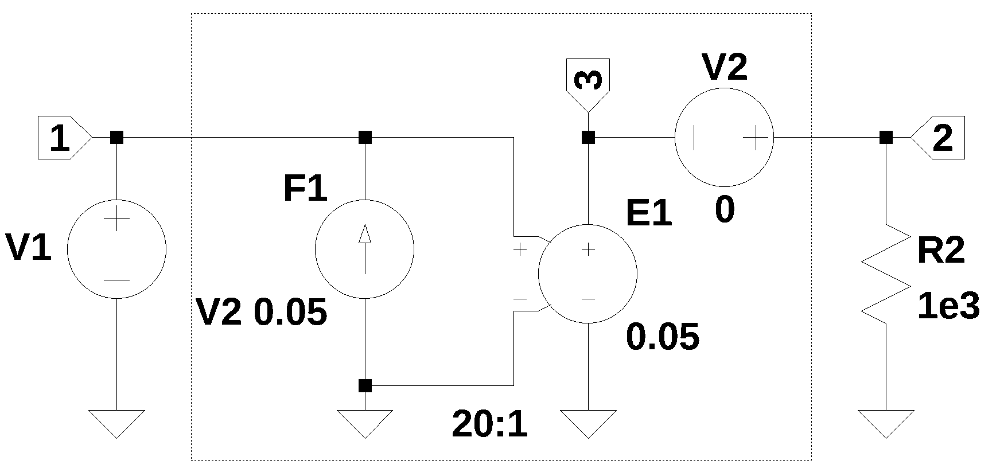

from sympy import *
import numpy as np
from tabulate import tabulate
from scipy import signal
import matplotlib.pyplot as plt
import pandas as pd
import SymMNA
from IPython.display import display, Markdown, Math, Latex
init_printing()9 Mutual Inductance
Mutual inductance is an electromagnetic phenomenon that quantifies the degree to which a time varying electric current in one coil induces a voltage in another coil through the interaction of their magnetic fields. This effect, often termed mutual induction, arises because the changing current in the first coil generates a magnetic flux, some fraction of which links with the turns of the second coil. The magnitude of mutual inductance depends entirely on the geometric arrangement of the two coils, including their relative orientation, distance, size, number of turns, and the magnetic permeability of the medium between them. It is the fundamental operating principle behind transformers and various other coupled circuits used for intentional energy transfer or signal coupling. The SI unit is the Henry (H).
A coupled inductor has two or more windings that are connected by a magnetic circuit. Coupled inductors transfer energy from one winding to a different winding usually through a commonly used core. The efficiency of the magnetic coupling between both the windings is defined by the coupling factor k or by mutual inductance.
The dot convention is a graphical method used to indicate the winding direction of a coil in relationship to other coils which are magnetically coupled. The convention uses a small dot placed at one terminal of each coupled coil. The placement of the dot indicates the relative direction of the windings around the core. If a current \(i_1\) enters the dotted terminal of one coil, it induces a voltage in the second coil \(v_2\) that is positive at the dotted terminal of the second coil.
The history of the inductor and transformer is fundamentally rooted in the discovery of electromagnetic induction in the 1830s. Michael Faraday in England, and independently Joseph Henry in America (whose name is honored by the unit of inductance, the henry), discovered that a changing magnetic field could induce an electric current in a nearby wire. Faraday’s “induction ring” of 1831, consisting of two coils wrapped around an iron ring, is recognized as the first prototype transformer, demonstrating the principle of energy transfer between circuits without a direct connection. This led to early induction coils (or spark coils), developed by Nicholas Callan and others, which used intermittent current to generate high voltages. However, the first commercially viable transformer for alternating current (AC) power distribution was not developed until the mid-1880s by Hungarian engineers Miksa Déri, Károly Zipernowsky, and Ottó Bláthy (the ZBD team), and soon after by William Stanley working for George Westinghouse in the United States, cementing the AC power system that relies on these devices to efficiently step voltage up or down for transmission and distribution.
Two example circuits are analyzed to explore the use of Python and MNA when analyzing circuits containing coupled inductors.
- A basic step down transformer
- An ideal transformer circuit model
The following models are used in the chapter.
9.1 Example Circuit 1
The circuit shown in Figure 9.1 contains one independent voltage source, three resistors and two coupled inductors. The coupled inductors for a step down transformer. \(R_1\) represents the resistance of the primary winding and \(R_3\) is the resistance of the secondary winding. \(R_2\) is the load and \(V_1\) is an AC source of 120 volts RMS at a frequency of 1,000 Hz. The netlist statement for the independent source, \(V_1\), is formatted as V1 1 0 120. which is correct for the MNA procedure.
There are phase dots shown on \(L_1\) and \(L_2\). Since the phase dots are on the reference end of the coils, the voltage in each winding is in phase.

The netlist generated by LTSpice is pasted into the cell below and some edits were made to remove the inductor series resistance.
net_list = '''
V1 1 0 120
R1 3 1 100
R2 2 0 1e3
L1 3 0 10
L2 4 0 20e-3
R3 2 4 0.5
K L1 L2 0.9
'''The network equations are generated from the netlist and displayed below.
report, network_df, df2, A, X, Z = SymMNA.smna(net_list)
# Put matrices into SymPy
X = Matrix(X)
Z = Matrix(Z)
NE_sym = Eq(A*X,Z)
# generate markdown text to display the network equations.
temp = ''
for i in range(len(X)):
temp += '${:s}$<br>'.format(latex(Eq((A*X)[i:i+1][0],Z[i])))
Markdown(temp)\(I_{V1} + \frac{v_{1}}{R_{1}} - \frac{v_{3}}{R_{1}} = 0\)
\(v_{2} \cdot \left(\frac{1}{R_{3}} + \frac{1}{R_{2}}\right) - \frac{v_{4}}{R_{3}} = 0\)
\(I_{L1} - \frac{v_{1}}{R_{1}} + \frac{v_{3}}{R_{1}} = 0\)
\(I_{L2} - \frac{v_{2}}{R_{3}} + \frac{v_{4}}{R_{3}} = 0\)
\(v_{1} = V_{1}\)
\(- I_{L1} L_{1} s - I_{L2} M s + v_{3} = 0\)
\(- I_{L1} M s - I_{L2} L_{2} s + v_{4} = 0\)
The symbols generated by the Python code are extracted by the SymPy function free_symbols and then declared as SymPy variables. Then the equations are solved and the results are displayed.
# turn the free symbols into SymPy variables
var(str(NE_sym.free_symbols).replace('{','').replace('}',''))
K = symbols('K') # declare a symbol for the coupling coefficient
# a dictionary is created for the element values and the numerical values are assigned.
element_values = SymMNA.get_part_values(network_df)
# The network equations can be solved symbolically.
U_sym = solve(NE_sym,X)
# display the symbolic solution
temp = ''
for i in U_sym.keys():
temp += '${:s} = {:s}$<br>'.format(latex(i),latex(U_sym[i]))
Markdown(temp)\(v_{1} = V_{1}\)
\(v_{2} = \frac{M R_{2} V_{1} s}{L_{1} L_{2} s^{2} + L_{1} R_{2} s + L_{1} R_{3} s + L_{2} R_{1} s - M^{2} s^{2} + R_{1} R_{2} + R_{1} R_{3}}\)
\(v_{3} = \frac{L_{1} L_{2} V_{1} s^{2} + L_{1} R_{2} V_{1} s + L_{1} R_{3} V_{1} s - M^{2} V_{1} s^{2}}{L_{1} L_{2} s^{2} + L_{1} R_{2} s + L_{1} R_{3} s + L_{2} R_{1} s - M^{2} s^{2} + R_{1} R_{2} + R_{1} R_{3}}\)
\(v_{4} = \frac{M R_{2} V_{1} s + M R_{3} V_{1} s}{L_{1} L_{2} s^{2} + L_{1} R_{2} s + L_{1} R_{3} s + L_{2} R_{1} s - M^{2} s^{2} + R_{1} R_{2} + R_{1} R_{3}}\)
\(I_{V1} = \frac{- L_{2} V_{1} s - R_{2} V_{1} - R_{3} V_{1}}{L_{1} L_{2} s^{2} + L_{1} R_{2} s + L_{1} R_{3} s + L_{2} R_{1} s - M^{2} s^{2} + R_{1} R_{2} + R_{1} R_{3}}\)
\(I_{L1} = \frac{L_{2} V_{1} s + R_{2} V_{1} + R_{3} V_{1}}{L_{1} L_{2} s^{2} + L_{1} R_{2} s + L_{1} R_{3} s + L_{2} R_{1} s - M^{2} s^{2} + R_{1} R_{2} + R_{1} R_{3}}\)
\(I_{L2} = - \frac{M V_{1} s}{L_{1} L_{2} s^{2} + L_{1} R_{2} s + L_{1} R_{3} s + L_{2} R_{1} s - M^{2} s^{2} + R_{1} R_{2} + R_{1} R_{3}}\)
Since \(L1\) and \(L2\) have been declared as being linked magnetically by the SPICE statement, K L1 L2 0.9, the mutual coupling is accounted for by the variable \(M\) in the network equations.
The coupling coefficient, \(K\), is a dimensionless value between 0 and 1 that quantifies the fraction of magnetic flux from one winding that links the other and is typically measured indirectly through inductance measurements. The most common and accurate method involves using an LCR meter to measure two specific inductance values on a winding (e.g., the primary, \(L_p\)): the open-circuit inductance (\(L_{open}\)), which is the self-inductance of the primary winding with the secondary winding open-circuited, and the short-circuit inductance (\(L_{short}\)), which is the inductance measured across the primary when the secondary winding is short-circuited. The short-circuit inductance represents the leakage inductance (\(L_{leak}\)) seen from the primary side. The coupling coefficient is then calculated using the formula: \(k = \sqrt{1 - \frac{L_{short}}{L_{open}}}\). This technique leverages the fact that perfect coupling (\(k=1\)) would result in zero leakage and therefore zero short-circuit inductance, whereas poor coupling (\(k \ll 1\)) results in \(L_{short}\) approaching \(L_{open}\).
In this example, let’s assume the inductance across \(L_1\) is measured when \(L_2\) is shorted and open. The measured values are recorded below and the transformer coupling coefficient, \(K\) is calculated from the measurements.
L1_open = 10
L1_short = 2
print(f'K measured: {sqrt(1-L1_short/L1_open):0.3f}')K measured: 0.894The value of \(K\) can be from -1 to +1 to account for a negative phase relation. Phase dots are drawn on the schematic to indicate the relative direction of the windings. In LTspice the phase dots are associated with the negative terminal of the winding. The coupling constant and the mutual inductance are related by the equation: \(K = \frac {M}{\sqrt{L_1 \times L_2}}\)
Below, \(M\) is calculated and added to the element value dictionary.
# calculate the mutual inductance from the coupling constant
element_values[M] = element_values[K]*np.sqrt(element_values[L1] *element_values[L2])
print('mutual inductance, M = {:.9f}'.format(element_values[M]))mutual inductance, M = 0.402492236Setting the frequency to 1000 Hz, and using the impedance values assigned above
freq = 1000 # Hz
omega = 2*np.pi*freq
print(f'radian frequency = {omega:,.1f} rad/s')radian frequency = 6,283.2 rad/sNE = NE_sym.subs(element_values)
NE = NE.subs({s:1j*omega})temp = ''
for i in range(shape(NE.lhs)[0]):
temp += '${:s} = {:s}$<br>'.format(latex(NE.rhs[i]),latex(NE.lhs[i]))
Markdown(temp)\(0 = I_{V1} + 0.01 v_{1} - 0.01 v_{3}\)
\(0 = 2.001 v_{2} - 2.0 v_{4}\)
\(0 = I_{L1} - 0.01 v_{1} + 0.01 v_{3}\)
\(0 = I_{L2} - 2.0 v_{2} + 2.0 v_{4}\)
\(120.0 = v_{1}\)
\(0 = - 62831.8530717959 i I_{L1} - 2528.93330317466 i I_{L2} + v_{3}\)
\(0 = - 2528.93330317466 i I_{L1} - 125.663706143592 i I_{L2} + v_{4}\)
Solve the network equations and display the results.
U = solve(NE,X)
table_header = ['unknown', 'mag','phase, deg']
table_row = []
for name, value in U.items():
table_row.append([str(name),float(abs(value)),float(arg(value)*180/np.pi)])
print(tabulate(table_row, headers=table_header,colalign = ('left','decimal','decimal'),tablefmt="simple",floatfmt=('5s','.6f','.6f')))unknown mag phase, deg
--------- ---------- ------------
v1 120.000000 0.000000
v2 4.825332 -1.275661
v3 119.980431 0.091395
v4 4.827745 -1.275661
I_V1 0.001924 95.883252
I_L1 0.001924 -84.116748
I_L2 0.004825 178.724339The turns ratio of a transformer, which is the ratio of the number of turns in the primary winding (\(N_p\)) to the number of turns in the secondary winding (\(N_s\)), is most accurately determined by measuring the ratio of the voltages across the windings. The fundamental relationship for an ideal transformer is given by \(N_p / N_s = V_p / V_s\), where \(V_p\) is the primary voltage and \(V_s\) is the secondary voltage. The turns ratio can also be calculated from the inductance values of coils.
n = sqrt(element_values[L1]/element_values[L2])
print(f'Transformer turns ratio: n = {n:.2f}')Transformer turns ratio: n = 22.36Alternatively, for simple diagnostics or hobbyist applications, a low-voltage AC source and two AC voltmeters (multimeters) can be used, ensuring the transformer is completely disconnected from the mains supply and applying a safe, low AC voltage to one winding (e.g., the high-voltage winding) while measuring the resulting voltage on the other winding. The measured ratio of the applied voltage to the induced voltage, \(\text{Ratio} = V_p / V_s\), serves as a close approximation of the turns ratio.
Reflected impedance is a key concept in the analysis of magnetically coupled circuits, most notably transformers. It represents the apparent impedance that a load connected to the secondary side of a transformer “presents” or “reflects” back to the primary side. Essentially, when a current is drawn by the load (\(Z_{load}\)) on the secondary winding, the resulting current on the primary side is determined not only by the primary’s own impedance but also by the load’s influence, which is mathematically transformed by the turns ratio of the transformer. The source connected to the primary side acts as if the load were directly connected, but with a modified value. The value of the reflected impedance is proportional to the actual load impedance and the square of the transformer’s turns ratio. For an ideal transformer, the reflected impedance (\(Z_{reflected}\)) is calculated as: \(Z_{reflected} = n^2 \cdot Z_{load}\).
Z_load = element_values[R2]
print(f'Load impedance: {Z_load} ohms')
print(f'Reflected impedance seen at primary side of transformer: {n**2*Z_load/1e3:,.1f}k ohms')Load impedance: 1000.0 ohms
Reflected impedance seen at primary side of transformer: 500.0k ohms9.2 Example Circuit 2
In this example, an ideal transformer is used where the turns ratio is specified. An ideal transformer is a theoretical, imaginary model used in electrical engineering to simplify the study of how power is transferred between circuits. It is a perfect version of a transformer that assumes there are no energy losses of any kind. While such a device does not exist in the real world, it serves as a critical reference point for designing and analyzing practical transformers, which usually operate at very high efficiencies (often over 95%).
To make a transformer ideal several simplifying assumptions are made:
- Zero Winding Resistance: The copper wires (primary and secondary coils) are assumed to have no resistance. This means there is no heat loss ( losses), often called copper loss.
- Infinite Core Permeability: The magnetic core is assumed to have infinite permeability (), meaning it requires zero magnetizing current to create magnetic flux.
- No Core Losses: There are no losses due to hysteresis (energy lost during magnetization cycles) or eddy currents (circulating currents in the core).
- Perfect Magnetic Coupling: It is assumed that 100% of the magnetic flux produced by the primary coil links with the secondary coil. There is zero leakage flux.
The behavior of an ideal transformer is governed by the ratio of the number of turns in its coils and the voltage is directly proportional to the number of turns. The ratio of the number of turns in the primary winding (\(N_p\)) to the number of turns in the secondary winding (\(N_s\)), is most accurately determined by measuring the ratio of the voltages across the windings. The fundamental relationship for an ideal transformer is given by \(N_p / N_s = V_p / V_s\), where \(V_p\) is the primary voltage and \(V_s\) is the secondary voltage.
The circuit shown in Figure 9.2 has the model of an ideal transformer drawn inside the dashed box. The model consists of a VCVS, \(E_1\) and a VCCS, \(F_1\). This is an ideal transformer and there is no winding resistance.

The turn ratio for the transformer is 20:1 and the gains for \(F_1\) and \(E_1\) are \(1/20=0.05\). The circuit’s netlist was pasted into the code below.
net_list = '''
F1 0 1 V2 0.05
V2 2 3 0
V1 1 0 120
E1 3 0 1 0 0.05
R2 2 0 1e3
'''The network equations are generated from the netlist and displayed below.
report, network_df, df2, A, X, Z = SymMNA.smna(net_list)
# Put matrices into SymPy
X = Matrix(X)
Z = Matrix(Z)
NE_sym = Eq(A*X,Z)
# a dictionary is created for the element values and the numerical values are assigned.
element_values = SymMNA.get_part_values(network_df)
# turn the free symbols into SymPy variables
var(str(NE_sym.free_symbols).replace('{','').replace('}',''))
# generate markdown text to display the network equations.
temp = ''
for i in range(len(X)):
temp += '${:s}$<br>'.format(latex(Eq((A*X)[i:i+1][0],Z[i])))
Markdown(temp)\(- I_{F1} + I_{V1} = 0\)
\(I_{V2} + \frac{v_{2}}{R_{2}} = 0\)
\(I_{Ea1} - I_{V2} = 0\)
\(v_{2} - v_{3} = V_{2}\)
\(v_{1} = V_{1}\)
\(I_{F1} - I_{V2} f_{1} = 0\)
\(- ea_{1} v_{1} + v_{3} = 0\)
The network equations can be solved symbolically and displayed.
# solve the equations
U_sym = solve(NE_sym,X)
# display the symbolic solution
temp = ''
for i in U_sym.keys():
temp += '${:s} = {:s}$<br>'.format(latex(i),latex(U_sym[i]))
Markdown(temp)\(v_{1} = V_{1}\)
\(v_{2} = V_{1} ea_{1} + V_{2}\)
\(v_{3} = V_{1} ea_{1}\)
\(I_{V2} = \frac{- V_{1} ea_{1} - V_{2}}{R_{2}}\)
\(I_{V1} = \frac{- V_{1} ea_{1} f_{1} - V_{2} f_{1}}{R_{2}}\)
\(I_{F1} = \frac{- V_{1} ea_{1} f_{1} - V_{2} f_{1}}{R_{2}}\)
\(I_{Ea1} = \frac{- V_{1} ea_{1} - V_{2}}{R_{2}}\)
After the element values have been substituted into the equations, the numeric equations are displayed below.
NE = NE_sym.subs(element_values)
temp = ''
for i in range(shape(NE.lhs)[0]):
temp += '${:s} = {:s}$<br>'.format(latex(NE.rhs[i]),latex(NE.lhs[i]))
Markdown(temp)\(0 = - I_{F1} + I_{V1}\)
\(0 = I_{V2} + 0.001 v_{2}\)
\(0 = I_{Ea1} - I_{V2}\)
\(0 = v_{2} - v_{3}\)
\(120.0 = v_{1}\)
\(0 = I_{F1} - 0.05 I_{V2}\)
\(0 = - 0.05 v_{1} + v_{3}\)
Solve the network equations and display the results.
U = solve(NE,X)
table_header = ['unknown', 'mag','phase, deg']
table_row = []
for name, value in U.items():
table_row.append([str(name),float(abs(value)),float(arg(value)*180/np.pi)])
print(tabulate(table_row, headers=table_header,colalign = ('left','decimal','decimal'),tablefmt="simple",floatfmt=('5s','.6f','.6f')))unknown mag phase, deg
--------- ---------- ------------
v1 120.000000 0.000000
v2 6.000000 0.000000
v3 6.000000 0.000000
I_V2 0.006000 180.000000
I_V1 0.000300 180.000000
I_F1 0.000300 180.000000
I_Ea1 0.006000 180.0000009.3 Summary
In this chapter the analysis of two circuits that contain mutually coupled inductors were examined. The first circuit was a simple transformer circuit where the coupling constant was given. In the second example, only the turn ratio was given. The following key concepts were illustrated:
- Calculation of the mutual inductance from the inductance values and the coupling constant.
- The concept of the ideal transformer and use of the circuit model.